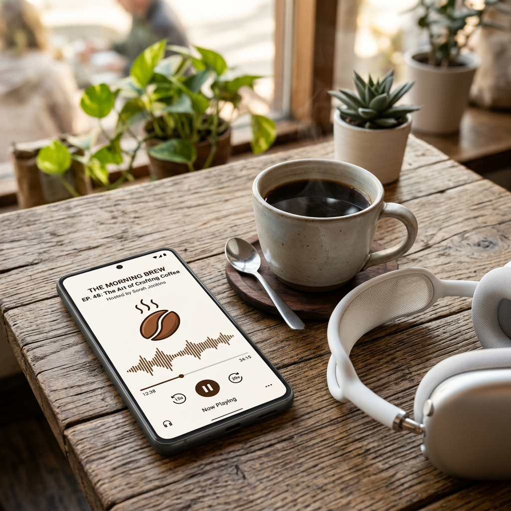

EL HÍGADO GRASO TIENE SOLUCIÓN.
Y COMIENZA EN TU PRÓXIMO PLATO.
Recupera tu salud, limpia tu organismo y gana más energía sin pasar hambre ni hacer dietas extremas.
Sí, quiero recuperar mi hígado
Recupera tu salud, limpia tu organismo y gana más energía sin pasar hambre ni hacer dietas extremas.
Sí, quiero recuperar mi hígado
No necesitas gastar una fortuna en alimentos raros ni pasar horas cocinando. Esta guía condensa años de experiencia clínica en un paso a paso directo, explicándote exactamente qué comer para desintoxicar tu hígado de forma 100% natural.
El hígado graso (esteatosis hepática) no aparece de la noche a la mañana. Estos son los signos claros de que tu cuerpo tiene un hígado sobrecargado y necesita un reinicio urgente:
Un síntoma clásico al despertar que revela una digestión pesada y acumulación de toxinas en el cuerpo.
Sientes cansancio desde la mañana, pesadez mental y falta de vitalidad para afrontar el día.
El cuerpo tiende a acumular grasa en la zona de la cintura que se vuelve muy difícil de eliminar debido al metabolismo ralentizado.
Incluso cuando intentas comer menos o hacer dietas, la báscula no se mueve porque el hígado graso bloquea la quema de grasas.
Al darle a tu hígado los nutrientes adecuados y retirar lo que lo sobrecarga, comenzarás a notar una increíble mejoría en todo tu organismo:
Olvídate del reflujo, la hinchazón después de comer y esa molesta sensación de llenura incómoda.
Despiértate con vitalidad, sin esa niebla mental constante ni la fatiga que te acompaña por las tardes.
Al desatascar tu hígado, tu metabolismo volverá a funcionar al 100%, facilitando la pérdida de medidas en el abdomen.
El hígado cumple más de 500 funciones. Al limpiarlo, tu piel lucirá más sana, tu aliento mejorará y te sentirás renovado.
Cientos de personas ya han comprobado la efectividad de este método paso a paso:

"Mi digestión mejoró muchísimo en la primera semana. Ya no tengo esa pesadez después de comer ni el reflujo que no me dejaba dormir. ¡Es increíble cómo cambia el cuerpo cuando comes lo correcto!"

"Bajé medidas y siento mucha más energía. Es súper fácil de seguir, ¡no pasé nada de hambre! Antes me costaba levantarme de la cama y ahora tengo energía para todo el día."
Un manual estructurado paso a paso fruto de años de práctica clínica.
El manual completo en PDF con todo el paso a paso para desintoxicar tu cuerpo y recuperar tu energía de forma natural.

Material de apoyo complementario diseñado para acelerar y consolidar tus resultados.

Controla la ansiedad sin dañar tu hígado con recetas prácticas y antojos sanos.

Guía visual rápida de sustitutos saludables para aprender a comprar inteligentemente.

Un plan de acción rápido y paso a paso interactivo para ver tus primeros cambios.

Estrategias clave sobre pérdida de peso, nutrición mediterránea y ejercicio contra la MASLD.

Guía de diapositivas clínicas de evaluación de riesgos, diagnóstico y algoritmos de tratamiento.

Resumen en audio de la ciencia del café contra la inflamación y el desarrollo de fibrosis.
Personas que tomaron acción y lograron cambiar su salud hepática de forma definitiva:

"La guía de supermercado es oro puro. Por fin sé qué comprar sin gastar una fortuna en cosas 'saludables' que en realidad tienen azúcares ocultos. En mi último chequeo mis enzimas hepáticas volvieron a la normalidad."

"Estaba escéptico, pero el plan de 30 días es súper práctico. Mis dolores abdominales desaparecieron y bajé 4 kilos que no podía perder de ninguna forma. Se lo recomiendo a cualquiera que sufra de hígado graso."
Inmediatamente después de la confirmación del pago. Recibirás un correo con el acceso para descargar todos los archivos PDF.
Sirve como un excelente apoyo nutricional, pero siempre recomendamos que consultes a tu médico para evaluar tu caso específico.
No, utilizamos alimentos accesibles que puedes encontrar en cualquier supermercado común.
Sí, aceptamos diversas formas de pago totalmente seguras para tu comodidad.
Todo el contenido es 100% digital. Lo recibirás en el correo electrónico registrado durante tu compra.
No dejes para mañana lo que puede salvar tu hígado hoy.
Tienes 7 días de garantía incondicional. Si por cualquier motivo no te gusta el contenido, te devolvemos el 100% de tu dinero, sin preguntas. Tu inversión está segura.
© 2026 Lic. Valentina Gómez. Todos los derechos reservados.